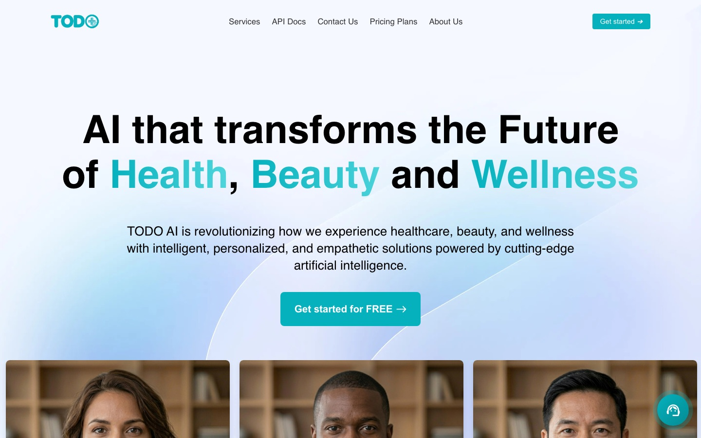

WORK OVERVIEW 07 · MULTIMODAL PRODUCT AI
Multimodal product advice.
A production AI advisor for an online pharmacy that answers by text, voice, or video in Italian, English, or French, including video skin analysis and subscriptions.
- My work
- Backend & applied AI engineering
- Context
- Product Partnerships
- Scope
- Online pharmacy · Mar 2025 – Aug 2026
- Focus
- Multilingual, multimodal AI
Meet people in the way they choose to ask.
THE CONTEXT
The work.
Customers of an online skincare and pharmacy business wanted personal product advice in their own language, in whatever form they chose to ask: a typed question, a voice note, or a short video of their skin. I built the production backend behind that advisor, including its AI, subscriptions, and catalog sync.
MY CONTRIBUTION
Where I contributed.
- Built the backend for an AI shopping advisor that customers talk to by text, voice, or video in Italian, English, or French, which recommends catalog products and adds them to the cart.
- Built video skin analysis: the system picks the clearest frame from the customer’s video, Gemini assesses the skin, and the findings become personalized product recommendations.
- Built the multilingual RAG pipeline: query expansion, OpenAI embeddings in ChromaDB, Jina reranking of the top 15 results down to 5, answers from Llama 3.3 70B on Groq, and Whisper for voice questions.
- Kept recommendations in sync with the live catalog through an event-driven pipeline (MySQL, SQS, Lambda) with signed requests.
- Built Stripe subscriptions with plan limits and usage quotas, on Django, Celery, and Redis.
BY THE NUMBERS
The scale.
- 3
- ways to ask: text, voice, or video
- 3
- languages: Italian, English, and French
- 5
- AI services working together behind one answer
- 18
- months of production development
TOOLS & TECHNOLOGIES
The stack.
- Backend
- PythonDjango 5Django REST FrameworkCeleryGunicorn
- Data
- MySQL (Amazon RDS)RedisChromaDBAmazon S3
- AI
- OpenAI WhisperOpenAI embeddingsGroq (Llama 3.3 70B)Google GeminiJina AI rerankerOpenCV
- Cloud & payments
- AWS LambdaAmazon SQSStripe
WHAT THE WORK SUPPORTS
The value.
- One advisor for text, voice, and video questions, in the customer’s language.
- Recommendations stay current as the product catalog changes.
- Paid plans and usage limits are enforced automatically.
THE PRODUCT
See it live.

Public overview.
This page summarizes my contribution and the tools I used at a high level. Proprietary implementation details, company and partner data, and internal documentation are not disclosed.